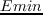
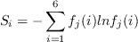
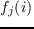
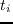
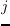

Designed sequences were compared to the Pfam alignment for the corresponding family, using the Blosum40 scoring matrix and a gap penalty of -6. Each Pfam sequence was also compared to its own Pfam alignment. For these Pfam/Pfam comparisons, if a test protein T was part of the Pfam alignment, the T/T self comparison was left out, to be more consistent with the designed/Pfam comparisons. If the test protein T was not part of the Pfam alignment, we used Blast to identify its closest Pfam homologue H and left the T/H comparison out, for consistency. The Pfam alignments were either the ``seed'' alignment for each family (around 50 sequences) or much larger, ``full'' alignments, with 6287, 3052, and 14944 sequences, respectively, for the SH3, SH2, and PDZ families. Similarities were computed for protein core residues, defined by their near-complete burial, and listed in Results.
Designed sequences were submitted to the Superfamily library of Hidden Markov Models [#!Gough01!#,#!Wilson07!#], which attempts to classify sequences according to the SCOP classification [#!Andreeva04!#]. Classification was based on SCOP version 1.75 and version 3.5 of the Superfamily tools. Superfamily executes the hmmscan program, which implements a Hidden Markov model for each SCOP family and superfamily; here hmmscan was executed with an E-value threshold of 10, using a total of 15438 models to represent the SCOP database.
To compare the diversity in the designed sequences with the diversity in natural sequences, we used a standard, position-dependent sequence entropy [#!DurbinBK!#], computed as follows:
where  is the frequency of residue type  at position , either in the designed sequences or in the natural sequences (organized into a multiple alignment). Instead of the usual, 20 amino acid types, we employ six residue types, corresponding to the following groups: {LVIMC}, {FYW}, {G}, {ASTP}, {EDNQ}, and {KRH}. This classification was obtained by a cluster analysis of the BLOSUM62 matrix [#!Murphy00!#], and also by analyzing residue-residue contact energies in proteins [#!Launay07!#]. To get a sense of how many amino acid types appear at a specific position , we usually report the residue entropy in its exponentiated form, ,which ranges from 1 to 6.
mignon
2017-11-30